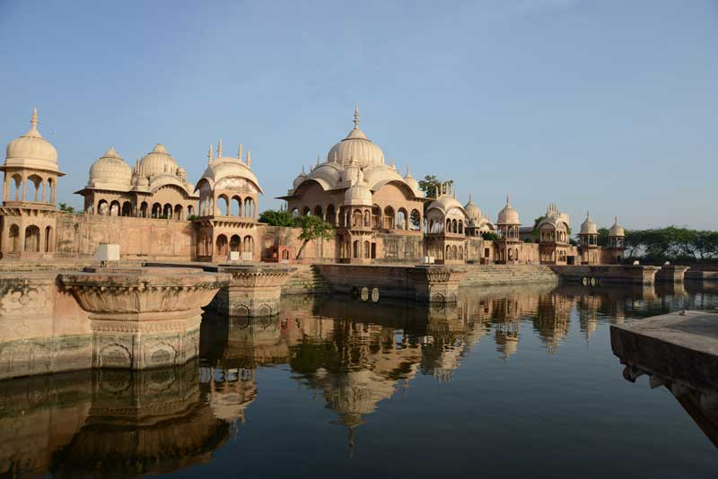

PLACES OF INTEREST (MATHURA) :
JANMABHOOMI
LYING ON THE NOTHERN INDIA ON THE BANK OF RIVER YAMUNA IA VERY FAMOUS FOR ITS PROFESSION OF LOVING ARTITECTURE. IT IS RECONSTRUCED BEHIND OF BABRI MOSQUE.
